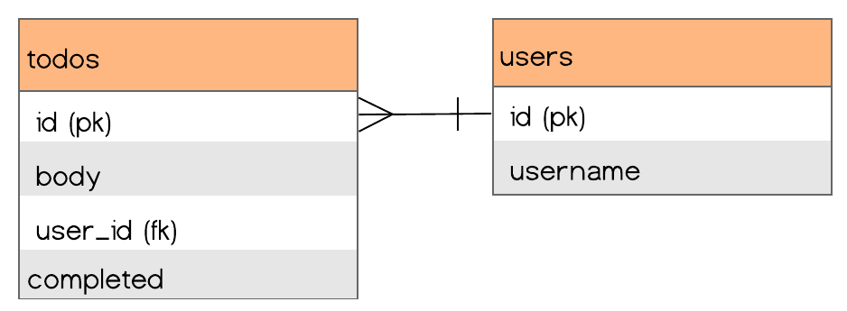
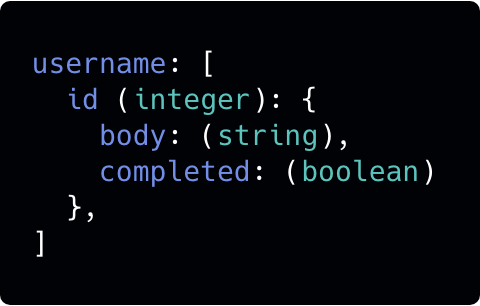
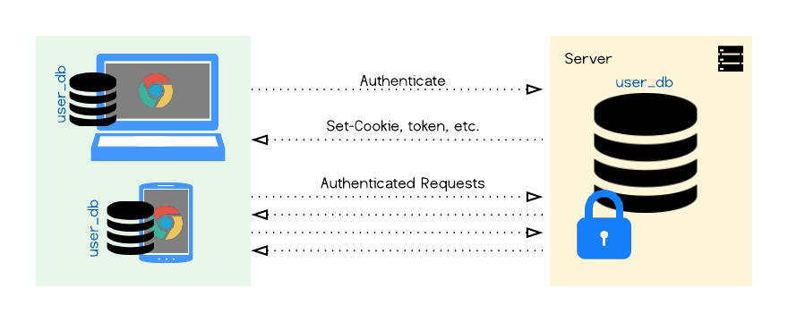
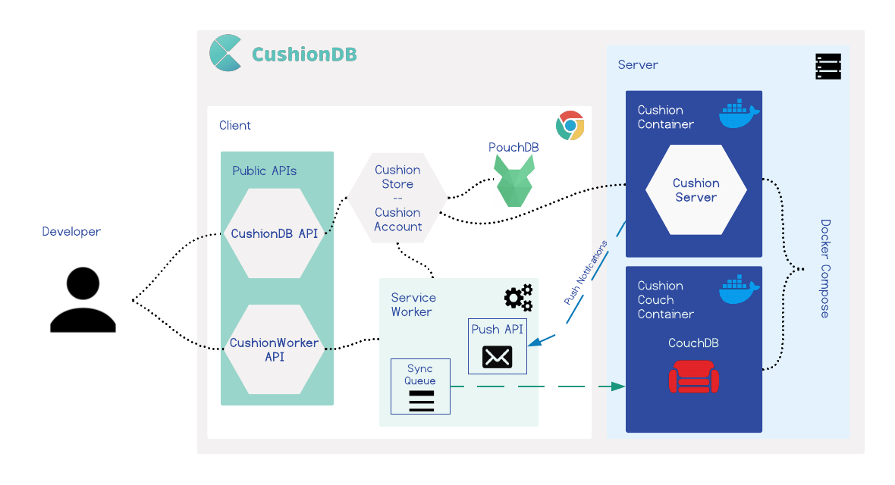
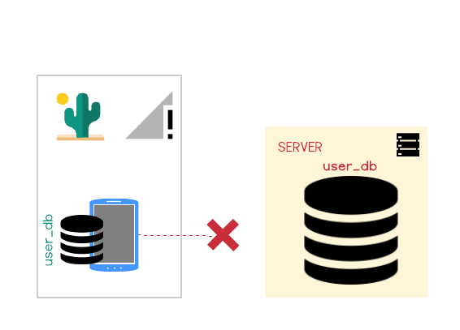
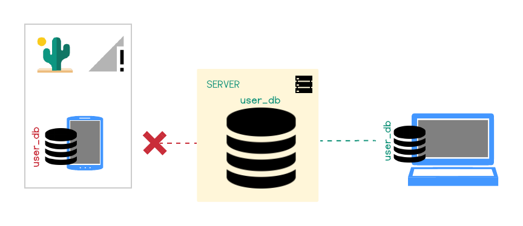
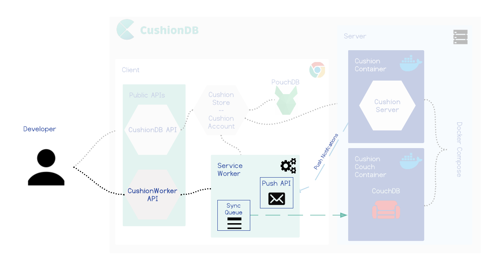

an open source database for progressive
web apps.
Introduction
Browsers today offer many tools that web developers can employ in order to make their applications compete with native apps in terms of experience and performance, allowing developers to transform standard web applications into powerful Progressive Web Applications (PWAs).
To enable that transformation, however, developers have to deal with PWA tools that are sometimes immature and oftentimes difficult to use and orchestrating the relationships between them can be tricky and cost many developer hours. This is especially true for offline-first data management - a key piece of any PWA. And so, while these tools are being offered by increasingly more and more browsers, and are being utilized by big companies, developers are still hesitant about adopting them for smaller apps.
CushionDB is an open source, easy-to-use data management framework for building small, offline-first, PWA compliant applications. It simplifies the process of managing and persisting single-user data without writing any server-side database code. It also provides user authentication out of the box, helping developers build secure PWA-compliant applications for efficient client-side data management.
Finally, CushionDB expands on current offline-first data models by employing different PWA tools that ensure data integrity regardless of network connectivity, and abstracts many of the complexities around utilizing these tools for native-like client side data management.
Before we talk more about CushionDB, let’s first take a quick look at what PWA tools are at our disposal and how they came to be.
Progressive Web Apps
Starting with the iPhone in 2007, smartphones have been increasingly replacing computers as the prominent device with which consumers interact with the web. Following the move towards responsive, mobile-friendly web applications, developers started leaning towards native applications, which provided a better user experience on mobile devices.
Progressive Web Applications are the web’s response to this trend.
What are PWAs?
At their core PWAs are an attempt to provide the same, or better, user experience as native apps on the web by enabling normal web applications to:
- Feel like a real piece of software - not a website wrapped by a browser
- Be navigable via an icon on the user’s home screen
- Send push notifications when the app is not open
- Perform background activities when the app is closed - like syncing data with a server.
- Offer some functionality even when the user is offline or on an unreliable network.
The last point is perhaps the biggest benefit of native applications. Some native applications require an always-on active internet connection, but for web applications, that's not an option -- if there's no internet connection, browsers can only display a ‘no internet connection’ page. A native app will still open and be able to communicate to the user what they can and can’t do without connectivity, while typical web applications won't be able to function at all.
Offline-First
If 100% reliable network connectivity was truly ubiquitous, the difference between native and web applications wouldn't be significant. And while we sometimes like to imagine that that’s the case, worldwide internet usage statistics paint a different picture.

There are many people who live in areas where coverage is not reliable, and even more are coming - 1.75 billion new users are expected to join the mobile internet in the coming years, with a large percentage of them in emerging markets[1] where network connectivity can be inconsistent. In India for example, a user can find 3G or better connection only 50% of the time[2]. And even in the West, where network infrastructure (at least in and around major cities) is better, developers still have to deal with the reality of tunnels, subways, and trans-oceanic flights -- places where end users might not have an internet connection.
Like Mobile-First, Offline-First design is a response to the way applications are used in the real world. It’s a philosophy that says that being offline or having a bad network while trying to browse the web should not be considered an error, but a legitimate state that developers and the applications they build should be able to respond to in order to give their end users the best experience.
Why PWA?
As noted, native apps already provide robust offline-first functionality and does it quite well. Why, then, would a developer opt to build an offline-first app for the web? Though not always appropriate, there are several valid scenarios where an offline-first web application can be useful and preferred over a native application.
Rapid Deployment
Example: a disaster relief organization that needs to build and deploy an application to be used by people on the ground after an immediate emergency. With a web application, the entire conception-development-deployment cycle is 100% within the control of the orgainzation. Smart organizations can build and deploy web applications as fast as possible and get the application into the hands of those in need right away. For native applications, deployments have to follow strigent rules set by app store vendors and also must wait for approval after every update. This wait can last hours or days or weeks and is completely unpredictable. Worse, this process must be repeated for every application update. A web application can be deployed and updated at any time and with any frequency and deployed instantanously, and easily accessible via a URL.
Privacy
Native applications force all applications to be uploaded to a public app store. For applications that are not meant for wide-scale public use and are only targeted for specific users, this is unnecessary and also violates the group's privacy.
Less to Learn and Develop
PWAs can allow web developers to develop full fledged apps with the tools they are already familiar with (like HTML, CSS and JS), rather than learn platform specific / cross platform libraries. It could also mean the difference between developing a new native app to supply a specific feature vs adding some native capabilities to an existing web app. And of course, developing an app for one platform takes less time, and is easier to maintain.
PWA Toolkit
Progressive Web Applications can offer these native-like capabilities thanks to tools built directly into modern web browsers -- no download or installation necessary. But it is important to keep in mind that support for these tools vary between browsers, with some tools offered by most browsers, and others tools by only one or two browsers.
The tools in the PWA toolkit:
Web App Manifest
A declarative document which browsers can use to determine how to display the browser around the site (color theme, orientation, etc), the app’s icon URL for a home-screen shortcut, and many other properties.
Push Notifications
A combination of two tools - the Push API, and the Notifications API.
The Push API is responsible for pushing messages from the server to the service worker on the client (more on service workers later), and the Notifications API interacts with the device's OS, pushing messages to the OS's notification system.
Cache API
Replaces the traditional browser cache that takes caching instructions from HTTP headers. It is an API that allows the developer to open caches, store, retrieve, update or delete any asset in those caches without cache invalidation tricks and reliance on browsers complying with the instructions.
The Cache API allows for both traditional resource caching and, with the assistance of service workers, can be used to display cached assets when the network is down.
IndexedDB
The most comprehensive data-storage solution on the browser - a JavaScript noSQL document database that can store all JS data types. The storage size varies by browser but is usually no less than 50mb, making it a viable storage solution for small web applications without requiring installation of any additional software.
Service Worker
The Service Worker is the glue that binds everything together. It’s a JavaScript file that is installed on the browser the first time a user visits a web page, and is positioned between the client and server. It runs on a separate thread from the app, and can intercept requests made by the browser or responses from the server, and programmatically return responses. And because service workers are installed on the browser, they do not go away when the app is closed - this is how most PWA magic happens.
For example, to serve cached resources, the service worker could intercept a request made by the browser, and respond with the cached resource instead of allowing the request to continue to the server. To display a push notification, the service worker must intercept the push request from the push API and relay the message to the Notification API on the user’s device.
A Note on Resource Management and Security
To make sure there are not thousands of service workers doing work in the background and draining the device's battery, service workers are not active by default. They are only activated in order to respond to different events, and are killed by the browser when they’re done with their task. Browsers also reserve the right to kill a service worker that has been active for too long. Some example service workers events are:
`install`occurs when the SW is first installed on the browser`fetch`occurs when the browser makes an HTTP request to the server-
`sync`occurs when the browser detects a connection after being offline
To make sure service workers can only alter data for the web application with which it is associated, the scope of what a service worker can do is limited to where it lives in the code - a service worker cannot access any files sitting "above" it in the folder structure. Moreover, when a service worker is activated while an app is closed, the browser will either notify the user (Chrome), or limit the number of times it is allowed to be triggered (Mozilla).
Toolkit Modularity
While referred to as a kit, these tools were developed at different points in time for different purposes, and can be utilized separately from one another. Here are some examples of applications using these tools individually for specific use cases:
- Media-heavy apps like the Washington Post and NYT are already making good use of the CacheAPI to allow users to engage with their apps while offline.
- The TwitterLite PWA makes use of IndexedDB and the CacheAPI to store data and pages on the client, resulting in blazing fast load times and also some offline/bad network functionality.
- The Pinterest PWA utilizes most of these tools and also push notification to help engage users.
- Even real-time applicaitons, like UberLite, use PWA tools. While these application can't ever be made to work offline, they can still use PWA tools to achieve fast load times and be made to look and feel like a native app.
Offline First Data Management
We'll set aside most of the PWA tools for a moment, and examine the most challenging aspect of offline-first apps: offline-first data management. Data management and serving offline users their data is a complex and critical component of any PWA-compliant application.
Where Would Client-Side Data Management be Most Valuable?
Not all apps benefit from client side data storage equally. Following is a chart that examines apps that rely heavily on user-submitted data (as opposed to media-apps and games etc).
While client-side storage could make a difference in many types of apps, we will be focusing on the last category of apps - single-user "private" applications, like note taking, todos, or fitness tracking applications. These are applications that, when employing an offline-first strategy, could really be made to compete with native apps' offline capabilities.
Example app: Private Todos app
To examine the steps a developer needs to make a web application offline-first, let's take a look at a hypothetical single-user todos app. In our web app, the todos are completely private to the user and todos cannot be shared between users of the app.
Offline-First Architecture
Data Structure
Traditional: Centralized SQL Database on the Server
In a web application, we might imagine the entity relationship diagram of our Todos app to look something like this:
A table with all of the users’ todos and another table with all of the users. User todos are queried using the todo’s foreign key `user_id` column.
However, if we want offline availability we'll have to store all of our user’s data on the browser. Our best client-side option is IndexedDB, a document store, so we will have to update our relational structure to fit a document model.
Alternative: NoSQL Database on the Browser
If we assume the app will only be accessed by a single user (akin to smartphone usage), we can assume that all entries in a browser’s database belong to the user who uses the browser (similar to a browser's bookmarks or history). We no longer have to query a centralized database and filter by user id - all of the data on the browser already belongs to that user.
Our new data structure might resemble something like this:
An IndexedDB dataset named after the user’s username, with objects keyed by the todo’s id.
Replication Strategy
Usually when we talk about replication we refer to a means to back up a database or reduce its load. In the offline-first scenario however, distributed data takes on a slightly different meaning.
Recall that at this stage we have all of our user’s data in the browser’s database. In our current model, if the user switched devices or even browsers (from Chrome to Mozilla for example), the data will not be synced across devices or browsers. If we want to enable the user to use the application on multiple devices then we need to come up with a replication strategy that will keep all the user’s devices up to date.
Distributed data in our case, then, becomes about making the data available to the user on multiple devices.
Traditional: Single Leader and Followers
This replication approach is typically used to take the load off of the leader node by delegating all read-queries to follower. We will use this idea for our offline first application.

We can design our app so that the server-side DB will serve as a leader, and will perform all of the writes. The the client-side databases will act as followers, taking the read-queries. When the user is offline, we will treat it as a temporary leader-failover, giving the client side database write privileges.
However, this approach can get messy quickly. For example, if we update the database while offline on two different devices, how will the server know which device was the last legitimate “leader”?
Alternative: Multi-Leader Replication
Multi-leader replication is usually useful for data that is replicated across multiple data centers. Once again, we'll borrow this technique for dealing with our single-user offline-first scenario when considering how to resolve writing from multiple offline devices.
We will treat every client-side database as a leader, with a server-side leader/coordinator that is responsible for communicating the changes asynchronously between the devices that cannot communicate directly with each other.
A Note on Conflict Resolution in Multi-Leader Replication
Multi-leader replication does introduce data conflicts, but because our app only has a single user, our conflicts are kept at a minimum. Versioning the database and defaulting to "last write wins" will suffice for now (in complex scenarios, we could also opt for manual conflict resolution).
Final Infrastructuree
Our final application infrastructure might look something like this:
We are creating a new database on the server per every new user, and this database is acting as the coordinator between multiple leader-replicas of the database which live on the user’s devices.
This might look strange at first, but it is a rather common infrastructure set-up that the vast majority of offline-first applications employ. If we wanted to include group data (for example to share todos between contacts or within a company) we would set up a database-per-role (or per-group) instead of a databaes-per-user.
Authentication for DB per User architecture
In a traditional SQL database, even if we had 1000 users, we would still only have one database with one admin on the server. In order to make changes a user would authentication with the application layer, and the latter would make changes to the database. In a one-database-per-user architecture however, as we will soon see, there is a strong preference for having each user as the admin of their own database, and authenticating with is - bypassing the application layer.
Having our databases in both ends mirror each other closely with our users authenticating directly with the database will make syncing, authentication, database security and scaling a lot simpler.
Data Structure Summary
It's easy to see at this point that setting up an offline-first web app is not a trivial task. Notably syncing IndexedDB, a hard to use database in its own right, between devices and maintaining multiple admins that interact with the database around the application layer are not things we expect to deal with when designing simple single-user apps. Due to the appeal and complexity of this setup some tools and frameworks have popped up to make writing offline-first easier. We will explore some of them in the following section.
Solutions
CouchDB & PouchDB
CouchDB is an open source document database that can be accessed through HTTP entirely and specializes in syncing. It is optimized for the multi-leader model, which makes it a natural choice for offline first data management. It supports the db-per-user model with some configuration, and can take care of user authentication with a separate _users database that stores all admins and their salted password-digests.
CouchDB can be used in tandem with PouchDB - an IndexedDB wrapper that acts as a CouchDB node on the client side. It has the same syncing protocol, and makes replicating databases between client and server very easy.
Pros and cons of the Couch&Pouch model:

Hoodie
Hoodie is an open source framework that simplifies the process of developing offline-first apps. It's built on top of PouchDB and CouchDB and is a no-backend framework - which basically means that a front-end developer can use Hoodie to create an offline-first web app without having to write any database, authentication or routing code.
Syncing with Hoodie is very similar to the Pouch & Couch model, but does it out of the box without any developer intervention. It abstracts the CouchDB authenticating and signup process, removing the need for the developer to create HTTP request heavy setups, which are a byproduct of CouchDB’s design.
Pros and cons of Hoodie:
CushionDB
CushionDB is similar to Hoodie in many ways - it abstracts data management to a simple object that hides the interaction and setup between CouchDB and PouchDB and takes care of user authentication. It expands on this model by being PWA compliant, which means it utilizes PWA tools that can take the offline-first model a step further, adding native application capabilities to web applications, like syncing when the app is closed and better handling of offline usage.
Pros and cons of CushionDB:

CushionDB
Architecture
In this section we will dig deeper into CushionDB's architecture. To set the stage, let's examine what it means for an offline-first framework to be PWA compliant. To do this we will look at hypothetical scenario.
Scenario 1
Our user will be Jenny - a volunteer out on a mission with a non-profit in a remote location who happens to use our todo app. At night she is at a room that has wi-fi, but during the day she is running around in areas with spotty reception at best.
Jenny is out for the day, and during her launch break she opens the todo app and creates a todo list for tomorrow based on the morning's work. Our web app is offline-first so despite having no reception on the she can open the app and add a to-do list without any issues. She closes the app and doesn't think about it.
However, not being a progressive web app, once Jenny closed the app her phone will not attempt to connect with the server. The new list will never make it to the server.
When she gets back to the hotel she opens up the todos app on her laptop only to find that the new list is gone.
In order to get the new list to her computer she will have to open the app on her cellphone again, now that reception is available - far from ideal. CushionDB however can push the data to the server while the app is closed. Let's examine how this is achieved.
CushionDB’s Solution
CushionDB syncs the databases through the service worker's syncManager. Whenever a change is made to the local database CushionDB sends a message to the service worker which queues a callback that pushes the local changes to the remote database. syncManager will either call the callback right away, or wait until a network is available. When network is detected syncManager attempts to call the callback function until it succeeds, or until it hits a attempt-limit. If a limit is reached, the browser will send a push notification to inform the user that some data was not synced and that intervention (reopening the app) is required.
By syncing through the service worker CushionDB is able to update the remote database while the application is closed, as long as the device has a network connection. In this way CushionDB is also able to wait for the network rather than pinging the server to check whether the connection is restored (a common network-check pattern) when the app is running, which reduces the drain on the battery.
Scenario 2
Let's go back to Jenny. She is in her wifi equipped room, making updates to her todos for tomorrow. She closes the app and goes to sleep. The next day, on the road (reception-less), she opens the todo app on her cellphone - but her new todos are not there. Even though her cellphone did have reception overnight - the app was not open, and couldn't initiate a fetch for the changes on the server. Jenny will now have to wait until she has reception again and her app is open to get the new todos. 
CushionDB's PWA capabilities enable it to pull data from the database while the app is not open. Let's examine how this is done.
CushionDB’s Solution
CushionDB utilizes the Push and Notification APIs to push changes to the user’s devices even when the app is closed
Following the user allowing notifications from the app (which is optional), CushionDB adds the user’s device to the user’s database document on the server. When a change is successfully synced to the server, the user’s active device makes a request to the CushionServer, which triggers a ‘push’ event with the service worker on the user’s other registered devices - all devices other than the one that made the request.
The push event triggers a notification that informs the user that work is being done in the background, and also makes a data sync to the local database from the server.
CushionDB Summary
To recap - here is a table of the way Cushion handles different connectivity scenarios vs the way other solutions do: While many frameworks and tools do offer offline capabilities, none (to our awareness) employ PWA tools to achieve this native-like syncing abilities.
Working with CushionDB
CushionDB is made up of two main components - the backend, which consists of two docker images, and an NPM package on the client.
Installing CushionClient
CushionClient is an npm package. It can either be added to the projects node modules by running npm i cushion-client from within the project's root directory, or cushion-client can simply be added as a dependency inside the project's package.json file.
Once CushionClient has been added as a dependency, changes can be made to the .couchConfig.json file within node_modules/cushion-client. This is only necessary if the default server configurations have been changed.

The URLs will be used for networking with the two backend containers and the Public VAPID key is needed for PWA Push Notifications to work.
Finally, a Service Worker file (sw.js) is needed in the project's root directory. This file comes packaged with the cushion-client node module and can be moved to the project's root directory using mv node_modules/cushion-client/sw.js .:

This is not what a typical Service Worker file would look like. To make sure CushionDB does not hijack these Service Worker events, we wrapped these events in our own CushionWorker API. More on this below.
Installing the CushionDB Backend
Since the CushionDB backend requires two separate Docker containers to run, a Docker Compose file is provided to get both of these containers downloaded, built, configured and running.
The first step to getting the backend ready is to clone the CushionBackend repo. The next step is to run the cushion-backend-start script from within the cloned directory. When you run it the first time this script will prompt the developer for information that will be used for various configurations for the two backend containers.

Once the configurations are done the script runs docker-compose in the background. Following this initial run the script won't ask for the information again, but if the configs change at a later point cushion-backend-init is the command for resubmitting the app's configuration.
Using CushionDB

The interaction with CushionDB takes place mostly on the client side. CushionDB exposes its APIs through a main CushionDB object. To access this object a developer simply instantiates a `cushiondb` object in their front end code. This object gives the developer access to the `store` and `account` APIs.
`cushiondb.store`
The `store` API exposes methods for the typical CRUD operations used for managing user data. The developer can treat the CushionStore as a typical runtime store object which returns promises. The store always persists that data both in the user’s device, and if the user is signed up and signed in, also persists it on the server.
The store also exposes a `subscribe` method, which accepts a callback to be called whenever a change occurs on the local database. This is useful for re-rendering the page whenever a change is made.
`cushiondb.account`
The `account` API exposes methods for typical user authentication ops. Signing up a user creates a new user_db on the server, and enable server replication of data.
The `account` API also has a `subscribeToPushUpdates` method which asks the user for permission to update their current device when changes are made on the server, and adds the device to the user’s devices that will get automatically updated if the user grants permission.
CushionWorker
CushionDB takes care of registering the service worker and all cushionDB related functions will work out of the box. CushionDB also enables developers to add their own push notifications, message and sync events which will piggie-back on CushionDB’s existing SW configuration.
For any other service worker functionality (like fetch events) developers will add their own scripts to the auto-created sw.js file as they would normally.
Design Decisions
In the process of designing and engineering our framework, we considered trade-offs to maximize ease of use and automation, while minimizing configuration complexities. In this section we will explore some of the more interesting design decisions and challenges we faced during development.
One User per Device
Being an in-browser database, the interaction with IndexedDB is slightly different from other databases. The main difference is the lack of authentication on the browser. By using the browser developer tools, anyone can see all of the data that belongs to this origin’s IndexedDB (domain or sub-domain). In order to prevent data from being visible while the user is logged out, IndexedDB is usually destroyed between sessions. This of course improves security, but adds load time for fetching data from the server, and if something was not replicated to the server before the user logged out it also means data loss.
Conversely, many native apps that deal with not-so-sensitive data do not require users to log in to view their data. The assumption is that the user has some screen lock on their phone, and that they are well-aware that some things (such as a credit card number) should not be stored in a note-taking app.
Since we are dealing with apps that should be able to function as a native app, we decided to allow the developer to choose whether or not to clear client side data on logout using an options object.
Service Worker Data Flow
CushionDB deals with data flow a little bit differently. While the application is running it can send data to the service worker via messages. However, the service worker is installed and can respond to events while the app is not running, and in these instances it cannot rely on the application for data. Furthermore, the service worker has no access to localStorage, the in-browser persistent key-value store.
How would a service worker respond to an event while the app is closed know who the user is, whether they are signed in, what database should they push changes to, etc?
CushionDB creates a meta-database in IndexedDB which stores user information and is deleted when the user is signed out.
Service Worker Event Hijacking
As we saw in the Using CushionDB section, CushionDB enables developers to add push notifications and other SW events using the CushionWorker API. Although this is a welcome functionality, it seems somewhat extraneous to our offline-first data management framework.
The reasoning behind this API is that every application can only have one service worker, and service workers cannot have multiple events of the same type. By using the service worker for CushionDB, we disabled the developer from creating their own push notifications, or messaging between the SW and the main thread for example.
Our solution to this was to create CushionWorker - a wrapper around some of the service worker's functionality. Other than setting a callback to be called on an event the developer needs to provide an id for the event which CushionWorker stores in an array. When an event is triggered CushionWorker iterates over the callbacks in the relevant array, and calls the one with same id as the event id.
Future Plans
CushionDB is still being developed, and there are many things we would like to add to it in the feature:
- Adding SSL for communication between client and server databases
- Integrating
CacheAPIin to the framework - Enabling developers to extend functionality through plugins
- Expand test coverage
- Improve compatibility with other browsers
- Expand functionality to accommodate apps with group as well as private data
About Us
Our team of three software engineers collaborated remotely across North America to build CushionDB. Feel free to reach out to us if you have any questions about CushionDB or would like to discuss any of the topics mentioned in our case study.

References